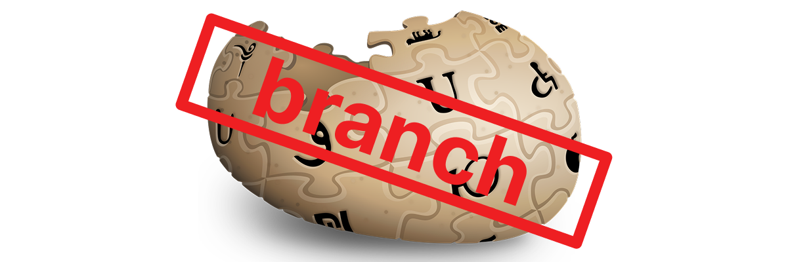

アンサイクロペディア厳選記事
アンサイクロペディアから面白い記事を厳選！
カービィ
カービィ (Kirby) とは桜井政博がハル生物化学研究所で所属していた時代に開発した凶悪生命体であり星のカービィシリーズの主人公である。無論、逆らうものは一口であの世へ連れて行かれる。また、後先考えない行動で他人の苦労を無にして世界を滅ぼしかねないようなトラブルを引き起こし、それを何らかの手助けを借りつつ根源から終息させる事によってヒーローに成り上がるというトンデモない奴である。なお、その最終兵器ぶりからしょっちゅう宮本茂に拉致される（いわゆる『ちゃぶ台返し』）。
饅頭恐怖症
饅頭恐怖症（まんじゅうきょうふしょう、manjuphobia）とは、饅頭（まんじゅう）があまりにも美味なために恐怖を覚え、饅頭のことを考えただけでも気分が悪くなってしまう恐怖症である。 また、極稀に栗まんじゅう問題について深く考えたために発症することがある。
人が死ねば武器屋が儲かる
人が死ねば武器屋が儲かる（ひと - し - ぶきや - もう -）とは、読んで字のごとく、人が誰かに殺されることで結果的に武器屋（軍需産業）が儲かるという、人間界における普遍的な事柄を表したものである。なお「風が吹けば桶屋が儲かる」とは語感がよく似ているものの、その性質は全く異なっている。
MORE